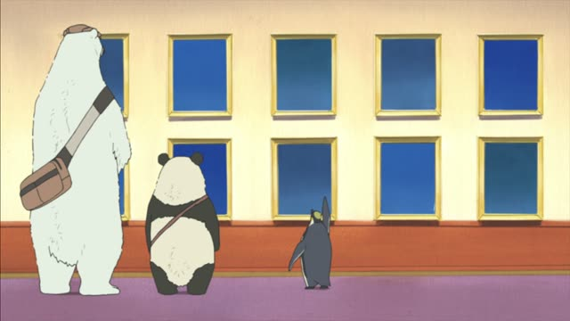

～のに (Purpose)
Sakamoto Days · Episode 7
顔隠すのにちょうどいいですね。
"It's just right for hiding your face." [trying on a face cover]
Verb + のに can mean "for doing, in order to", but only before a few words: 使う, いい, 便利, 必要, かかる (time or money), 大変. 顔を隠すのにいい = "good for hiding your face".
On this card, Sakamoto buys something to hide his face. ちょうどいい: just right for it. ですね makes it polite.
Not the same as のに "even though". Here, a word about use, time or cost always comes after it.
Goblin Slayer · Episode 8
小鬼を殺すのに使う。
"I use it for killing goblins."
On this card, the shop clerk says his cheap sword won't kill much. Goblin Slayer answers what he uses it for. のに + 使う.
Quick Examples
Showing a friend your new bag.
このかばん、旅行するのに便利だよ。
"This bag is handy for traveling."
CasualAsking about a commute.
会社に行くのに１時間かかります。
"It takes an hour to get to work."
のに + かかる: time or money.
PoliteA friend wants to start skiing.
スキーを始めるのにいくら必要？
"How much do you need to start skiing?"
CasualYour teacher shows a dictionary.
これは漢字を調べるのに使います。
"We use this for looking up kanji."
PoliteWith and without
安いのに、おいしい。
"It's cheap, and yet it's tasty." のに = even though.
食べるのに時間がかかる。
"It takes time to eat." のに = for doing.
Examples from Media
Oishinbo · Episode 44
どうしてだしをとるのに子牛を使うんですか？
"Why do you use veal for making stock?"
Kekkon Dekinai Otoko · Episode 7
会うのに理由が必要ですか？
"Do I need a reason to see you?"
Odd Taxi · Episode 2
ミステリーキッスのＣＤ買うのに使うんすよ。
"I use it to buy Mystery Kiss CDs."
すよ = casual ですよ.
Dungeon Meshi · Episode 23
自分を振り返るのに、料理は最適だ。
"Cooking is perfect for looking back on yourself."
Brush Up Life · Episode 9
会場押さえるのにもお金かかるしさ。
"Even booking a venue costs money."
のに + も: "even for".
Samurai Champloo · Episode 18
いいか、人を斬んのに文字なんて必要ねえんだよ。
"Listen, you don't need letters to cut people down."
斬んのに = 斬るのに, slurred.

Shirokuma Cafe · Episode 25
水温の感じを表現するのに苦労したんだよ。
"It was hard to get the feel of the water temperature across."
のに + 苦労する: had a hard time doing it.
Death Note · Episode 14
信用させるのに必要か。
"Is it needed to make you trust me?"